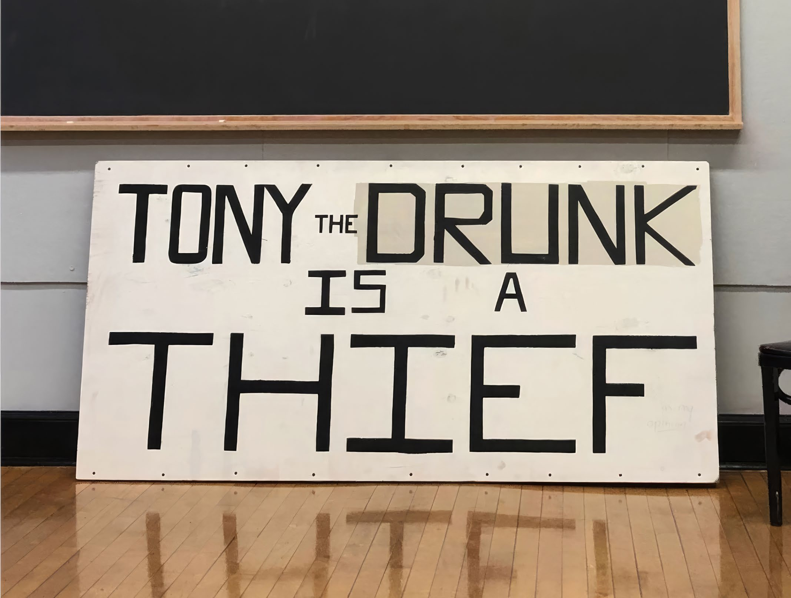
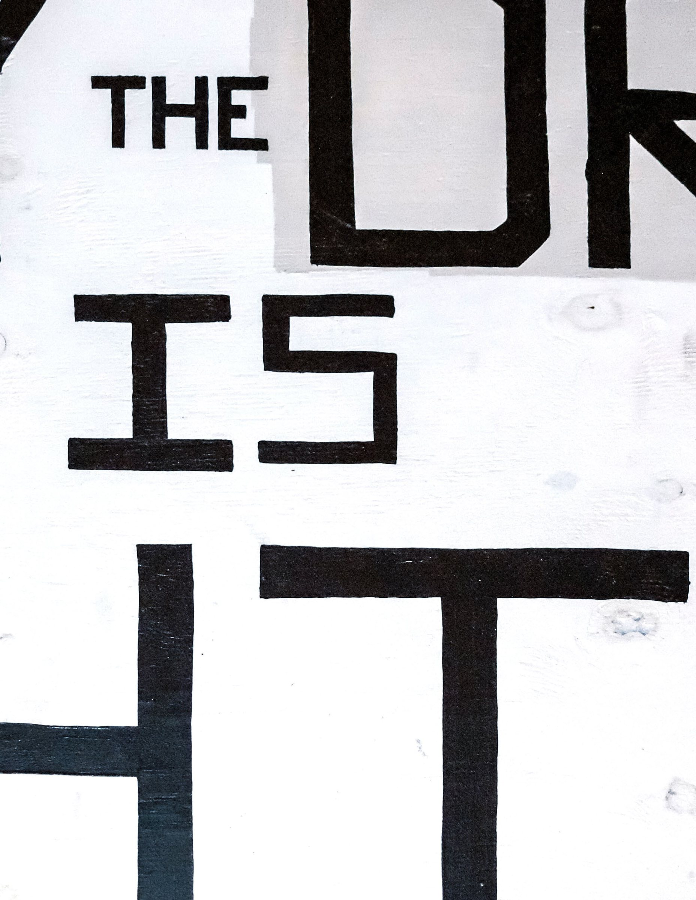

Tony the Drunk Is a Thief, 2018
Tony the Drunk Is a Thief is a replica of a roadside sign from rural New Hampshire.


Tony the Drunk Is a Thief is a replica of a roadside sign from rural New Hampshire.

